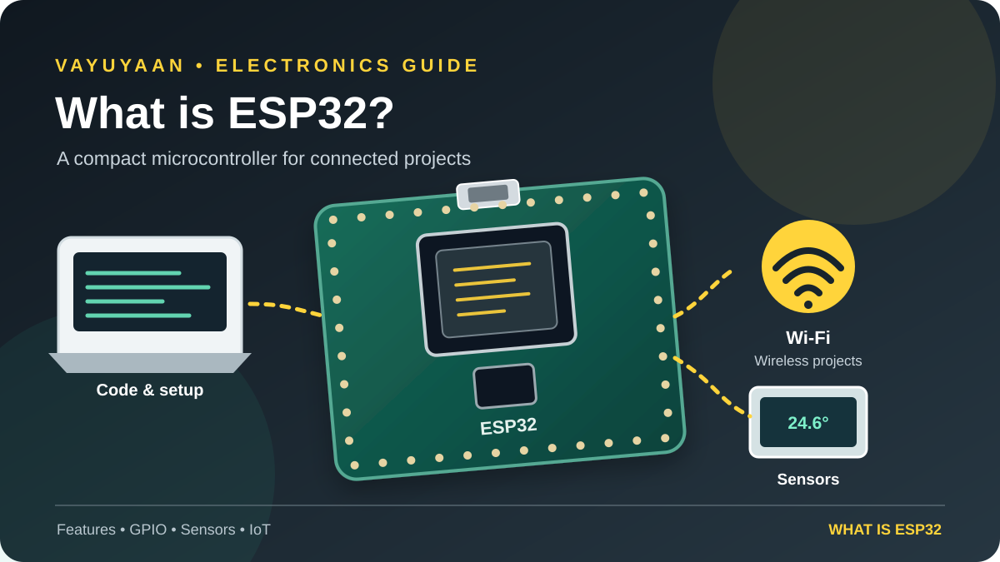

Imagine a small electronic board that can read a temperature sensor, switch a light, connect to your Wi-Fi network and send data to a dashboard. An ESP32 development board can do all of that in one compact setup.

ESP32 boards are popular with students, makers and engineers because they combine general-purpose input/output (GPIO), communication interfaces and wireless capabilities at a relatively low cost. However, the ESP32 is a family of chips, so features and pin layouts vary by model. If you are ready to configure a board, continue with our What is ESP32 setup guide.
ESP32 is a family of microcontrollers from Espressif Systems. Many variants include Wi-Fi and Bluetooth, making them useful for connected electronics and IoT projects. You program the chip to read inputs, process information and control outputs.
What is ESP32?
The ESP32 is a microcontroller family developed by Espressif Systems. A microcontroller is a compact computer on a chip. It runs a program, reads signals from connected components and controls outputs according to your code.
A development board places an ESP32 chip or module on a circuit board with supporting components. Depending on the board, it may include a USB connector, voltage regulator, antenna, boot buttons and pins that make it easier to connect sensors or displays.
This distinction matters: ESP32 refers to the chip family, while an ESP32 development board is the physical board you connect to your computer and project circuit.
How does an ESP32 work?
You write a program on your computer and upload it to the development board. Once powered, the ESP32 executes that program without needing your computer to stay connected. The program can read sensor values, make decisions and control devices.
- Read an input: collect a signal from a button, temperature sensor, light sensor or other compatible module.
- Process the data: use your code to compare values, calculate a result or decide what should happen next.
- Control an output: turn on an LED, update a display or send a control signal to a suitable driver circuit.
- Communicate: on supported models, use Wi-Fi or Bluetooth to exchange data with another device or service.
For example, a room-monitoring project can read a temperature sensor and send readings over Wi-Fi to a local dashboard. The ESP32 runs the logic; the sensor, power supply and dashboard provide the rest of the system.
Key ESP32 features
Wi-Fi and Bluetooth on supported variants
Wireless connectivity makes the ESP32 useful for smart-home controls, remote monitoring and network-connected sensors. Not every chip in the ESP32 family supports the same Bluetooth version or wireless combination, so check the exact model before buying.
GPIO and communication interfaces
General-purpose input/output pins connect the microcontroller to external circuits. Depending on the model, peripherals may include ADC, PWM, I²C, SPI, UART and touch sensing. Not every pin supports every function, and some pins have boot or input-only restrictions.
Small size and flexible development options
ESP32 development boards are available in different sizes and layouts. Many beginners use the Arduino IDE, while developers can also use Espressif's ESP-IDF framework. Your choice depends on the board, project requirements and how much control you need.
Power-saving modes
Some ESP32 projects use sleep modes to reduce energy consumption between readings. Actual battery life depends on the board's regulator, sensors, wireless activity, firmware and wake-up interval—not just the chip's sleep specification.
What is ESP32 used for?
The ESP32 works well when a project needs local control plus communication or data collection. Common examples include:
- IoT sensors: send temperature, humidity, air-quality or other readings to a local network or cloud service.
- Home automation: control compatible lights, switches and monitoring systems through a network.
- Wireless control: build Bluetooth or Wi-Fi interfaces for suitable electronic devices.
- Robotics: read sensors and control motor-driver inputs in small robots. Motors need a suitable driver and power supply.
- Data logging: collect measurements and save or transmit them for later analysis.
- Prototypes and learning: experiment with displays, buttons, relays, sensors and communication protocols.
It is not automatically the best choice for every circuit. A simple project that only blinks an LED may need a more basic board; an ESP32 becomes especially useful when its processing, peripheral or wireless features solve a real project need.
ESP32 vs Arduino Uno: what is the difference?
Arduino Uno is a development board built around a different microcontroller platform and ecosystem. ESP32 boards often offer more processing capability and built-in wireless connectivity, while the Uno is a straightforward option for learning basic electronics and digital I/O.
| Consideration | ESP32 development board | Arduino Uno R3 |
|---|---|---|
| Wireless | Wi-Fi/Bluetooth on supported variants | No built-in Wi-Fi or Bluetooth on the classic Uno R3 |
| Best fit | Connected sensors, IoT and wireless control | Foundational electronics and simple control projects |
| Pin details | Model-specific; some pins have restrictions | Defined Uno R3 layout and familiar beginner examples |
| Logic voltage | GPIO is generally 3.3 V logic; do not assume 5 V tolerance | Classic Uno R3 uses 5 V logic |
Choose based on the project, not on a claim that one board is always better. If you are new to microcontrollers, read the Arduino Uno R3 beginner's guide as well, then compare the wiring and programming requirements for your project.
How to choose an ESP32 development board
Before ordering, check the board's exact name and documentation. Boards can use different ESP32 variants, USB-to-serial chips, pin layouts and power arrangements. A pinout from one board may not match another even if both are sold as ESP32 boards.
- Confirm the chip or module name printed on the board or product page.
- Check the pinout diagram and note any input-only or boot-strapping pins.
- Confirm how the board connects to your computer and whether a USB driver is required.
- Check the supported wireless features and available memory for your planned project.
- Make sure the board's dimensions, antenna placement and power options suit the enclosure or battery you intend to use.
How to get started with ESP32
You do not need to begin with a complicated IoT build. First prove that your board can connect to your computer and run a basic program. Then add components one at a time.
- Identify your board. Use its exact model and pinout instead of guessing from a similar-looking board.
- Install your development environment. Follow the current setup instructions for Arduino-ESP32 or ESP-IDF.
- Select the board and port. Connect with a data-capable USB cable and select the matching board target and serial port.
- Upload a simple example. Start with an example supported by your board. Follow the board-specific BOOT/reset procedure if the upload requires it.
- Verify before adding hardware. Check the upload result and serial output. Once that works, connect a single sensor or output and test again.
Once you understand the core features and have chosen a board, prepare the development environment and upload a first sketch. Start with a simple example, then add one component at a time.
Power and wiring precautions
ESP32 GPIO is generally designed for 3.3 V logic and should not be treated as 5 V-tolerant. A sensor powered from 5 V may produce a 5 V signal even if its data sheet lists a lower operating voltage for some pins. Check the sensor's output specification and use a suitable level shifter or interface when needed.
Never power a motor, servo or other high-current load directly from a GPIO pin. Use an appropriate driver and a power supply sized for the load. Follow the circuit design for grounding, and disconnect power before changing wiring. Always check the documentation for your exact board and component.
Frequently asked questions
Is ESP32 good for beginners?
Yes. Start with a supported development board and a simple example. Learn the pinout and power limits before connecting external hardware.
Does every ESP32 have Wi-Fi and Bluetooth?
Wireless features vary across the ESP32 family. Check the exact chip's official specification rather than assuming all variants have identical Wi-Fi and Bluetooth support.
Can I program ESP32 with Arduino IDE?
Yes. The Arduino-ESP32 platform supports many ESP32 boards. Follow Espressif's current installation instructions and select the correct board target.
Can I connect a 5 V sensor directly?
Do not assume it is safe. Check the sensor's signal voltage and the board's electrical limits. Use a level shifter or a compatible interface if the sensor output exceeds the ESP32's GPIO limits.
Should I choose ESP32 or Arduino Uno?
Choose ESP32 when wireless connectivity or its additional capabilities help your project. Choose the classic Uno when its simpler setup and 5 V ecosystem suit the circuit and learning goal.
PUT THE BASICS INTO PRACTICE
Ready to set up your ESP32 board?
Use the step-by-step setup guide to check your board, configure the development environment and run your first test.
Use the setup steps above to get your board ready, then add one component at a time.
Technical reference: Espressif Systems · Arduino-ESP32 documentation · ESP-IDF getting started.